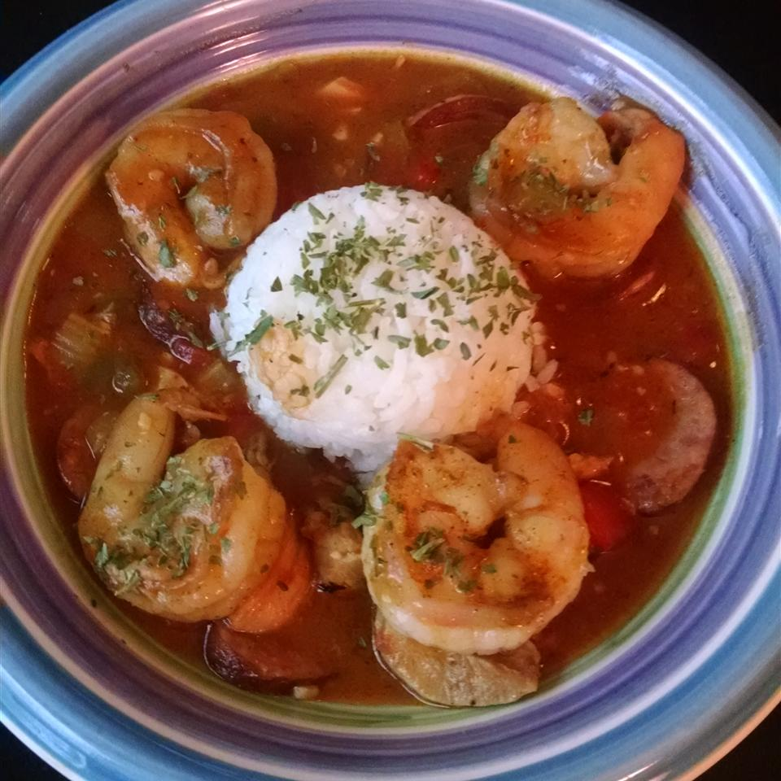

Good New Orleans Creole Gumbo

Description
A timeless southern recipe that is served over hot cooked rice. Can be refrigerated or frozen and served the next day.
Ingredients
- 1 cup all-purpose flour
- 3/4 cup bacon drippings
- 1 cup coarsely chopped celery
- 1 large onion, coasely chopped
- 1 large green bell pepper, coasely chopped
- 2 cloves garlic, minced
- 1 pound andouille sausage, sliced
- 3 quarts water
- 6 cubes beef bouillon
- 1 tablespoon white sugar
- salt to taste
- 2 tablespoons hot pepper sauce (such as Tabasco), or to taste
- 1/2 teaspoon Cajun seasoning blend (such as Tony Chachere's), or to taste
- 4 bay leaves
- 1/2 teaspoon dried thyme leaves
- 1 (14.5 ounce) can stewed tomatoes
- 1 (6 ounce) can tomato sauce
- 4 teaspoons file powder, divided
- 2 tablespoons bacon drippings
- 2 (10 ounce) packages frozen cut okra, thawed
- 2 tablespoons distilled white vinegar
- 1 pound lump crabmeat
- 3 pounds uncooked medium shrimp, peeled and deveined
- 2 tablespoons Worcestershire sauce
Steps
- Make a roux by whisking the flour and 3/4 cup bacon drippings together in a large, heavy saucepan over medium-low heat to form a smooth mixture. Cook the roux, whisking constantly, until it turns a rich mahogany brown color. This can take 20 to 30 minutes; watch heat carefully and whisk constantly or roux will burn. Remove from heat; continue whisking until mixture stops cooking.
- Place the celery, onion, green bell pepper, and garlic into the work bowl of a food processor, and pulse until the vegetables are very finely chopped. Stir the vegetables into the roux, and mix in the sausage. Bring the mixture to a simmer over medium-low heat, and cook until vegetables are tender, 10 to 15 minutes. Remove from heat, and set aside.
- Bring the water and beef bouillon cubes to a boil in a large Dutch oven or soup pot. Stir until the bouillon cubes dissolve, and whisk the roux mixture into the boiling water. Reduce heat to a simmer, and mix in the sugar, salt, hot pepper sauce, Cajun seasoning, bay leaves, thyme, stewed tomatoes, and tomato sauce. Simmer the soup over low heat for 1 hour; mix in 2 teaspoons of file gumbo powder at the 45-minute mark.
- Meanwhile, melt 2 tablespoons of bacon drippings in a skillet, and cook the okra with vinegar over medium heat for 15 minutes; remove okra with slotted spoon, and stir into the simmering gumbo. Mix in crabmeat, shrimp, and Worcestershire sauce, and simmer until flavors have blended, 45 more minutes. Just before serving, stir in 2 more teaspoons of file gumbo powder.